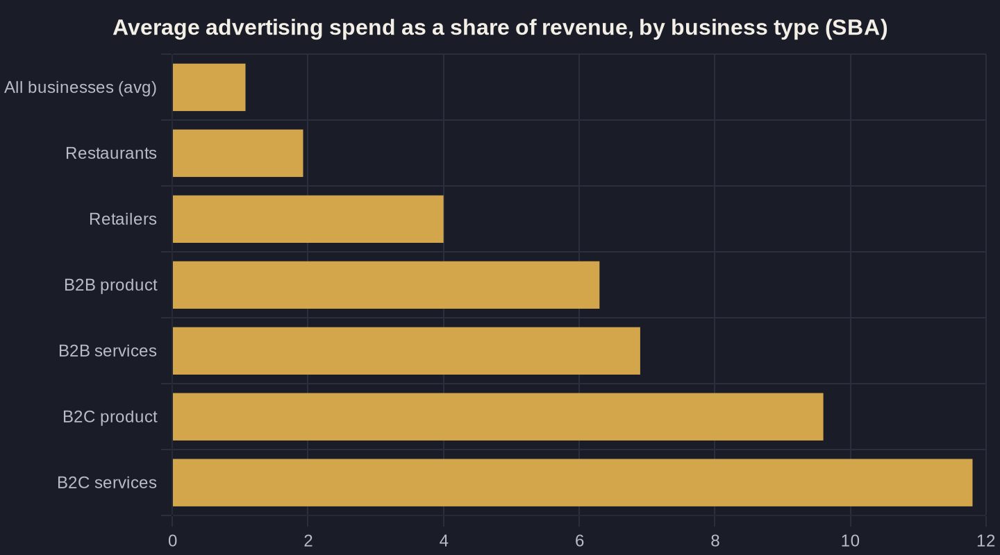

How Much Should a Local Business Spend on Marketing?
A revenue-based way to set your number — then turn it into leads, protect it from the leaks that drain it, and trace what every dollar actually returns.
Key takeaways
- There is no universal number: the SBA pegs average ad spend near 1.08% of revenue but states plainly there's no hard and fast answer — type, margin, and lifetime value decide it.
- Set the percentage from your margins and customer lifetime value, not an industry average, then divide by cost per lead to see what the budget actually buys.
- At LOCALiQ's $66.69 average cost per lead, a $3,000/month budget should produce roughly 45 leads; legal-services pricing (~$131.63) roughly halves that.
- Fund reputation and call handling as line items — 97% of buyers read reviews, and up to 41% of weekend home-services calls go unanswered, wasting the spend that drove them.
- Track every dollar before you scale; an unmeasured budget can't be defended, and confidence in the numbers is what makes raising spend safe.
What a Healthy Marketing Budget for a Local Business Looks Like
Most owners want one number. The honest answer is a range, and it depends on your revenue, your margins, and how fast you want to grow. A useful macro marker comes from the enterprise world: Gartner's 2025 CMO Spend Survey found marketing budgets flatlined at 7.7% of company revenue, holding flat against the prior year across 402 marketing leaders. That figure covers large companies with full marketing teams and brand budgets, so treat it as a ceiling reference, not your target.
For a local service business, advertising is usually a smaller, sharper slice. The U.S. Small Business Administration notes the average business spends about 1.08% of revenue on advertising, and it states plainly there is "no hard and fast answer." A healthy marketing budget for a local business sits somewhere between those poles — more than a token ad allowance, less than an enterprise brand budget — and the right spot depends entirely on the economics of one new customer. The rest of this guide is about finding that spot.
The Percent-of-Revenue Starting Point (and Where It Breaks)
Percent-of-revenue is the cleanest place to begin building a marketing budget for a local business, because it scales with what you can actually afford. The SBA's breakdown shows how much the "right" percentage moves by business type: restaurants near 1.93%, retailers around 4%, B2B product companies about 6.3%, B2B services near 6.9%, and B2C services as high as 11.8% (SBA marketing budget guidance). The chart below puts those side by side.
The reason the spread is so wide is margin and customer lifetime value. A med spa, an HVAC company, or a law firm can spend far more to win a customer than a quick-service restaurant, because each new client is worth more over months and years. That lifetime value — not the industry average — is the real input. Before you lock a percentage, answer what a new customer is actually worth to you over their lifetime, which is the heart of Owner's Math.
Phase matters too. A new business fighting for visibility, or an established one pushing into a new service line or town, will sit at the higher end while it builds momentum; a mature business defending a steady book of work can sit lower. Set the percentage for the season you're in, then revisit it every quarter.
Turn the Budget Into Leads, Not Just Dollars
A budget in dollars is abstract. A budget in leads is a plan. The way to make a marketing budget for a local business real is to divide the dollars by what one lead costs. In search advertising, LOCALiQ's benchmarks put the average cost per lead at $66.69 and the average cost per click at $5.42 across all industries — and notably, cost per lead dropped for the first time in five years, a small tailwind for owners buying clicks today.
Those averages hide big differences by industry. Attorneys and legal services run about $131.63 per lead, near the top of the range, while many home and trade services sit lower. Run the division on your own number: a $3,000 monthly budget at the all-industry average should buy roughly 45 leads; at legal-services prices, closer to 23. The table below shows how a few budget levels translate at both ends of that range. This is the move that turns "what should I spend" into "how many calls will this put on my calendar."
One caution: cost per lead is not cost per customer. If half your leads book and a job is worth $1,200, even a $130 lead is cheap. The budget conversation only makes sense once you connect lead cost to close rate and job value — again, the Owner's Math that ties spend to revenue rather than to clicks.
Budget for Where the Decision Actually Happens
Ad clicks are not where a local customer decides — reputation is. BrightLocal's Local Consumer Review Survey found 97% of consumers read online reviews for local businesses, and 71% use Google to read them. If your budget pours into ads but ignores your Google Business Profile and review flow, you are paying to send ready buyers to a storefront that looks empty when they arrive.
This is why a smart marketing budget for a local business funds reputation as a real line item, not an afterthought: steady review requests, profile management, and fast answers to questions and messages. Reviews are also where a chunk of your ad spend quietly converts or dies — a strong profile lifts the click-through and call rate on the very ads you are already paying for. It is often the cheapest lever you have, and it compounds month over month.
| Monthly ad budget | Leads at average CPL ($66.69) | Leads at legal-services CPL ($131.63) |
|---|---|---|
| $1,000 | ~15 | ~8 |
| $3,000 | ~45 | ~23 |
| $5,000 | ~75 | ~38 |
| $10,000 | ~150 | ~76 |

Protect the Spend You Already Have
The fastest way to improve return usually isn't spending more — it's plugging the leaks in what you already spend. Most local buyers still want to talk to a person: Invoca's research found 68% of consumers prefer phone over any other channel, including chat and email, when they reach out to a business. For local services, the phone call often is the conversion, which means it has to be answered.
It frequently isn't. In home services, Invoca reports 18% of inbound calls go unanswered on weekdays and 41% on weekends. Every missed call is paid ad spend that drove a buyer straight to voicemail. Budgeting for call handling, coverage, and fast follow-up protects the spend you already have — the same theme behind where local businesses waste ad spend and why response time decides the sale.
Picture the math on a single Saturday. If your ads drive 20 calls and 41% go unanswered, eight buyers reached voicemail — and many won't call back, they'll call your competitor. No amount of additional ad budget fixes that; it only feeds more calls into the same gap. Coverage and speed are budget items, even though they don't look like "marketing" on a spreadsheet.
Know Which Dollars Are Working
A budget you can't measure is a budget you can't defend. Plenty of owners increase spend and see no clear change, because they can't trace a single booked job back to the ad, call, or page that produced it. That blind spot — the attribution gap — is what makes budgets feel like guesswork and makes "spend more" a scary ask.
Fix tracking before you scale: call tracking on every number, conversion tracking on the website, and a simple record of where each booked job came from. Once every dollar is traceable, the budget stops being a leap of faith and becomes a dial you turn with evidence behind it.
Tracking also changes the emotional weight of the decision. When you can see that last month's spend produced a known number of booked jobs at a known cost, raising the budget feels like pressing an accelerator, not rolling dice. That confidence is worth nearly as much as the data itself.
Building Your Number
Put it together in four steps, and your number stops being a guess:
- Start from revenue. Pick a percentage that fits your margins and goals — lower to protect cash, higher to chase market share.
- Divide by cost per lead. Turn the dollars into an expected number of leads so the budget has a clear job to do.
- Reserve for reputation and call handling. Protect the leads you pay for so they don't leak before they convert.
- Track every dollar. Make next quarter's number a decision backed by evidence, not a hunch.
That framework is exactly the Owner's Math work I do with local owners — turning revenue and goals into a specific marketing budget for a local business, then tracing what each dollar returns. Read the full Marketing ROI for Local Business guide for the complete picture, or join the newsletter and we'll work through building your number together.
Sources
- Gartner 2025 CMO Spend Survey (press release) (2025)
- U.S. Small Business Administration - How to Get the Most From Your Marketing Budget (2025)
- LOCALiQ Search Advertising Benchmarks (by industry) (2026)
- BrightLocal Local Consumer Review Survey (2026)
- Invoca - Most Consumers Want to Call Businesses (2025)
- Invoca - Home Services Marketing Statistics (2025)
Want this run on your numbers?
Book a call and we will run the Owner's Math on your business — clear numbers, a straight plan, no pitch. Or read the free Playbook first.